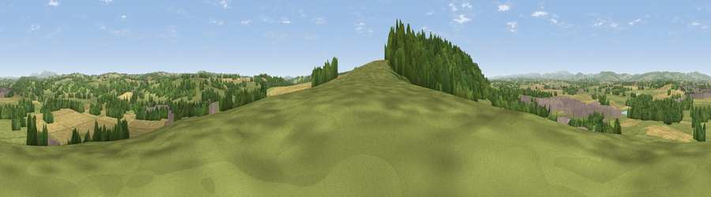

Viewpoint near Stoke Prior
#12127 in England · top 33% of its area beats it · near Stoke Prior · access?Where it is
The exact computed spot (SO 50075 55775). Click the marker for map links.
Public access: no public right of way or access land is recorded at this exact spot — it may be on private land. Computed from Natural England's CRoW access layer and OpenStreetMap rights of way — not the legal definitive map. Always verify locally.
The view, rendered

A 360° render of this exact spot computed from the terrain model, tree cover and land cover — summer colours, afternoon light, calibrated against photographs of famous viewpoints. Real trees, hedges and buildings will differ in detail.
The panorama
Grey silhouette: terrain skyline in each direction (720 bearings, Earth curvature and refraction included). Dashed green: skyline with trees (+15 m) and buildings (+8 m) as obstacles. Blue strip: how far the ground is visible on each bearing.
Where the view opens
Wedge length = distance to the farthest visible ground on that bearing (vegetation-aware). Rings at 10, 25 and 50 km.
What fills the view
42% grassland · 27% cropland · 25% woodland · 5% built-up
Angular shares of the visible panorama (visual magnitude), not map area. Landscape diversity 0.53 (0–1 Shannon).
Key numbers
More beautiful places nearby
The staircase of upgrades: each row has a higher view potential than everything closer. Driving times are estimates from straight-line distance, calibrated against real road routing — check an actual route before setting out.
| Place | Direction | Drive | Score |
|---|---|---|---|
| Viewpoint near Ivington | WSW · 1 km | ~3 min | 65.1 |
| Viewpoint near Bodenham | SSE · 5 km | ~10 min | 71.4 |
| Viewpoint near Westhope | SW · 6 km | ~12 min | 77.0 |
| Viewpoint near Weobley | SW · 11 km | ~21 min | 77.5 |
| Viewpoint near Weobley | WSW · 12 km | ~22 min | 79.7 |
| Viewpoint near Leinthall Starkes | NNW · 14 km | ~26 min | 80.3 |
| Gatley Hill | NNW · 15 km | ~26 min | 82.6 |
| Titterstone Clee | NNE · 24 km | ~39 min | 83.8 |
52.19793, -2.73186 · source: screening · position refined by local search. Computed location — check access rights before visiting.